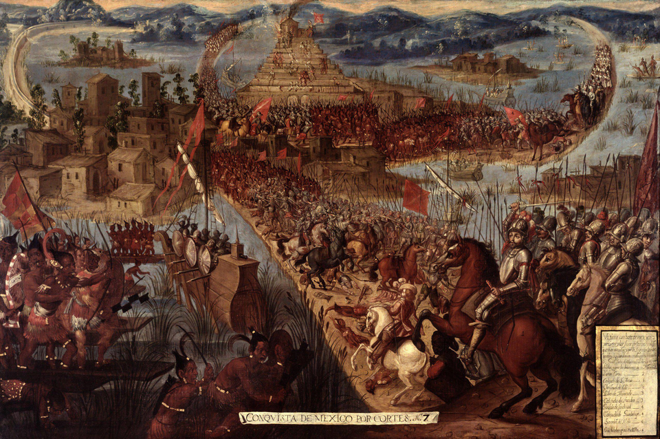

Cae México-Tenochtitlan: la gran ciudad de los lagos se rinde entre ruinas
Las huestes de Hernando Cortés y sus aliados de Tlaxcala tomaron los últimos reductos y apresaron al señor Cuauhtémoc cuando huía en una canoa. La ciudad más asombrosa que ojos de castellano vieron jamás ya no existe.

La ciudad que asombró a cuantos la vieron cayó hoy martes, día de San Hipólito. Hacia el mediodía, un bergantín al mando de García Holguín dio alcance en la laguna a una canoa grande donde huía Cuauhtémoc, señor de los mexicas, con su familia y sus últimos capitanes. Preso el señor, cesó al fin el combate, y sobre los escombros del barrio de Tlatelolco, postrer reducto de la defensa, se hizo un silencio que ni los soldados más curtidos supieron celebrar. Llovió al anochecer, con truenos, como si el cielo quisiera lavar lo que abajo quedaba: una ciudad de canales cegados por la ruina, y un pueblo que sale de ella por las calzadas, descarnado y mudo, con lo puesto.
Quien no vio esta ciudad antes del sitio no sabrá nunca lo que hoy se pierde. Cuando los castellanos entraron por primera vez, hace menos de tres años, la contemplaron desde la calzada como cosa de sueño: una ciudad alzada en medio de la laguna, con torres y adoratorios que salían del agua, puentes levadizos, huertas que flotan, y un mercado, el de Tlatelolco, donde cada día trocaban decenas de millares de almas y que los soldados juraron mayor que cuanto habían visto en Roma o en Constantinopla. Los más leídos decían que ni en los libros de caballerías se cuentan cosas semejantes. Ésa es la ciudad que esta tarde es escombro y humo.
De aquel primer asombro a este final median una prisión y una noche aciaga. Cortés tuvo por huésped y por rehén al gran Moctezuma, muerto en las revueltas del año pasado, y hubo de escapar de la ciudad a oscuras dejando en las acequias la mitad de su gente y del tesoro. Volvió con lo que entonces no tenía: trece bergantines armados pieza a pieza y botados en la laguna, y un ejército inmenso de aliados de Tlaxcala, de Texcoco y de otros pueblos que pagan a los mexicas tributo y rencor desde hace generaciones. Esta conquista, dígase claro, no la hicieron novecientos castellanos solos: la hicieron con decenas de millares de indios que quisieron ver caer a México.
El sitio fue obra del hambre y de la sed tanto como de la pólvora: se cortó el caño de Chapultepec, que daba de beber a la ciudad, y los bergantines cerraron el paso a las canoas de bastimento. Dentro se comió lo que no tiene nombre de comida, y una pestilencia de viruelas, llegada con los de Castilla, había segado antes a millares, entre ellos al señor Cuitláhuac, que venció a Cortés y reinó apenas ochenta días. Del vencido de hoy cuentan los presentes que, puesto ante el capitán, tocó el puñal que éste lleva al cinto y le habría dicho: «pues no he podido defender mi ciudad ni a mi gente, toma ese puñal y mátame con él».
Cortés promete reedificar sobre estas ruinas una gran ciudad para su rey, y ya se reparten solares sobre el papel. Este diario, que dio cuenta hace veintinueve años del hallazgo de estas Indias, debe hoy dejar escrito, para que nadie lo olvide, que en medio de una laguna de estas tierras existió una de las ciudades más grandes y hermosas del mundo, y que hubo de ser destruida casa por casa para poder ser vencida. Quede para los años venideros juzgar la jornada entera: los imperios que aquí acaban y comienzan, los millares de muertos sin nombre, y ese silencio de esta tarde, que ni los vencedores quisieron romper.